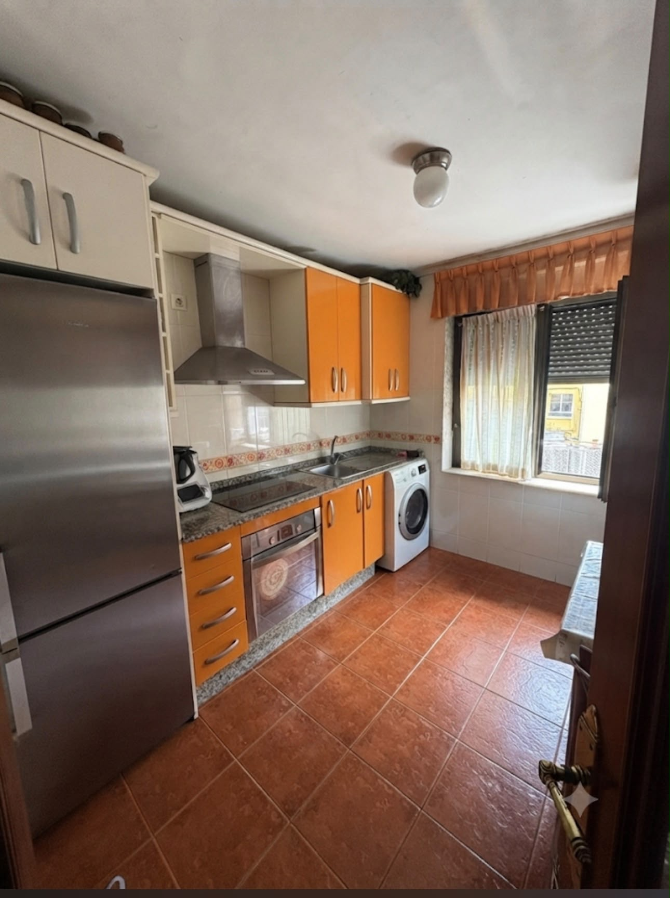
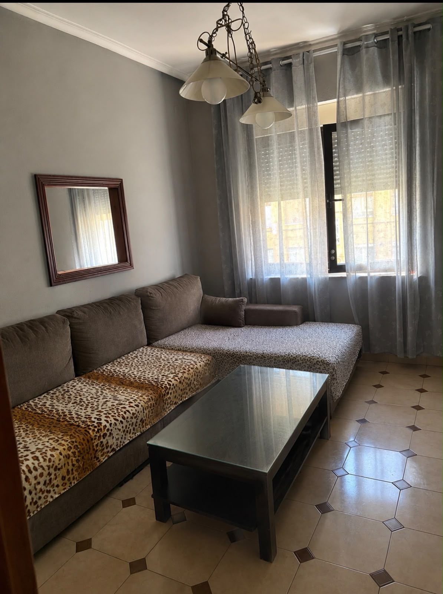
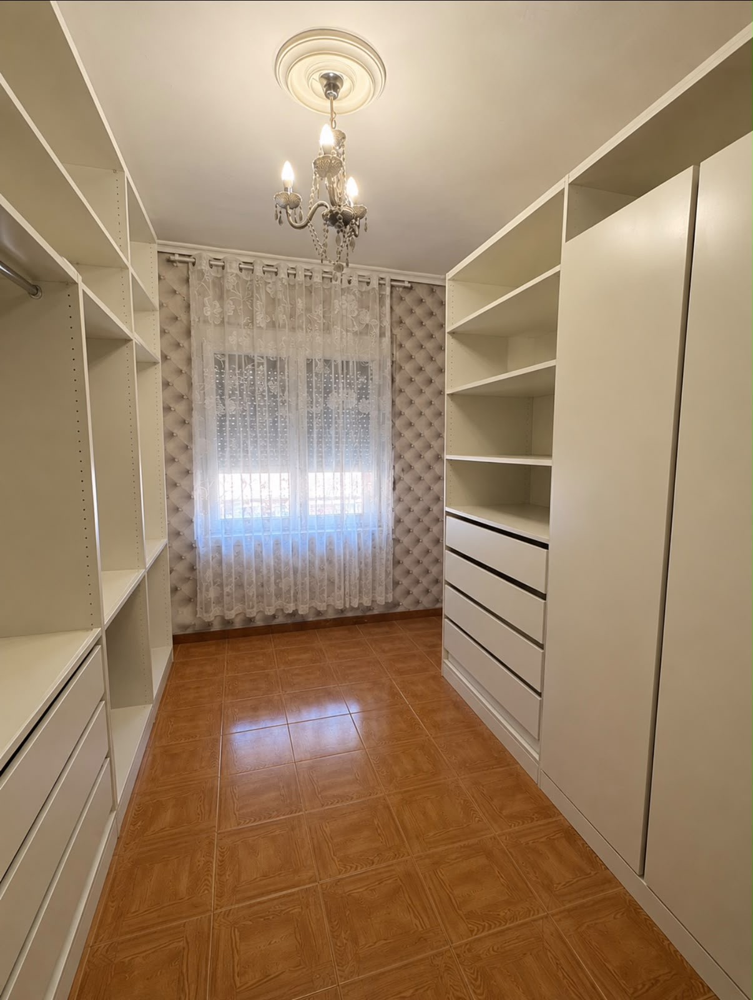
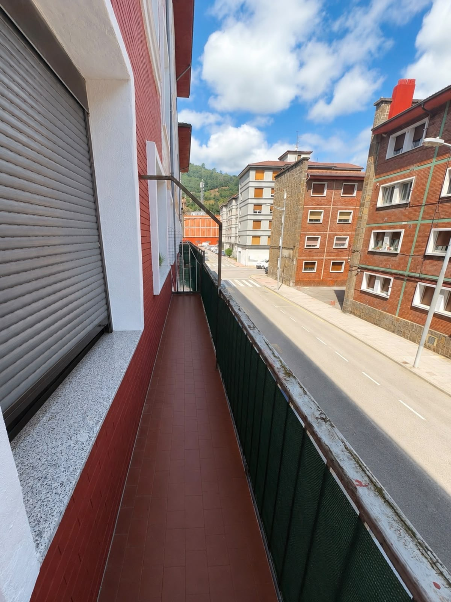

Cómo usar este dossier: si buscas tu casa, céntrate en las
secciones 1 a 5. Si compras para alquilar, ve directo a la 6. Y en cualquier
caso, la sección 7 te deja lista la visita.
Asesoría CastresanaPiso en San Juan Bautista de La Salle · Mieres · Ref. ES1765666
01
La vivienda: ficha completa
Un piso de tres habitaciones con superficie real de vivienda familiar,
en plena Calle Avilés de Mieres.
Datos del inmueble · Ref. ES1765666
Tipo
Piso
Ubicación
Calle San Juan Bautista de La Salle, Mieres (Asturias) · C.P. 33600
Superficie construida
85 m² (incluida la balconera)
Superficie útil
77 m²
Planta
1ª planta · edificio sin ascensor (un solo tramo de escaleras)
Habitaciones
3 dormitorios
Baños
1 baño completo
Exterior
Balcón-terraza corrido a la calle, con vistas despejadas al monte
Cocina
Amueblada y equipada (vitrocerámica, horno, campana, lavadora)
Extras
Habitación con vestidor a medida · se entrega amueblado
Dato clave: 77 m² útiles con 3 dormitorios, balcón corrido
exterior y cocina ya equipada es un formato que escasea en Mieres:
entras a vivir sin obras ni inversión inicial en mobiliario. Y al ser 1ª
planta, el "sin ascensor" pesa poco: un solo tramo de escaleras.
Los datos de superficie, distribución y ubicación proceden de
la información facilitada por la agencia (ref. ES1765666); el equipamiento
descrito, de las fotografías actuales de la vivienda. El resto de
características (estado, certificado energético, gastos de comunidad) se
facilitan en la ficha completa y durante la visita.
Asesoría CastresanaPiso en San Juan Bautista de La Salle · Mieres · Ref. ES1765666
02
La vivienda, en imágenes

Cocina amueblada y equipada: vitrocerámica, horno, campana y lavadora.

Segunda sala de estar, luminosa y con ventana a la calle.

Habitación con vestidor a medida en perfecto estado.

Balcón-terraza corrido, exterior y con vistas despejadas al monte.
Asesoría CastresanaPiso en San Juan Bautista de La Salle · Mieres · Ref. ES1765666
03
Cómo se vive en este piso
Tres dormitorios reales dan mucho juego. Estas son las tres formas
más habituales de aprovechar una vivienda así.
Para una familia
Dormitorio principal, habitación para los niños y una tercera que crece con
vosotros: cuna hoy, escritorio mañana. Con 80 m² útiles, el día a día no se
hace pequeño: hay sitio para vivir, no solo para dormir.
Para teletrabajar
La tercera habitación como despacho cerrado —con puerta, no una esquina del
salón— es hoy uno de los criterios que más valoran los compradores. Este piso
lo resuelve sin renunciar a habitación de invitados.
Para compartir
El formato de 3 dormitorios y baño completo funciona muy bien en convivencia:
parejas que empiezan y comparten con un tercero, o hermanos que se independizan
juntos repartiendo gastos. Y al entregarse amueblado, se empieza a vivir
(o a alquilar) desde el primer día.
Los detalles que marcan la diferencia
Balcón-terraza corrido a la calle: café al sol, tendedero exterior y vistas al monte.
Vestidor a medida ya montado: un extra que normalmente cuesta miles de euros añadir.
Cocina completa con lavadora, horno y vitrocerámica: cero inversión inicial.
Consejo Castresana: en la visita, decide primero qué uso le
darías a la tercera habitación. Es la pregunta que convierte "un piso más"
en tu piso.
Asesoría CastresanaPiso en San Juan Bautista de La Salle · Mieres · Ref. ES1765666
04
Mieres, la zona del piso
Vivir en Mieres significa hacer la vida andando y
tener Oviedo a un paso.
Todo a pie
Comercio de barrio, supermercados y hostelería en el propio entorno del centro.
Colegios, institutos y servicios administrativos del concejo a distancia caminable.
Sanidad pública de referencia en el concejo (atención primaria y hospital comarcal).
Bien comunicado
Conexión por carretera con Oviedo por el corredor del Caudal (A-66/AS), en unos 20 minutos.
Tren de Cercanías con parada en Mieres: alternativa diaria al coche para trabajar o estudiar fuera.
Un dato que pocos compradores tienen en cuenta
Mieres cuenta con campus universitario de la Universidad de Oviedo. Para un
comprador significa servicios y vida en el centro; para un inversor, un
perfil extra de demanda de alquiler (estudiantes y personal vinculado al
campus) que no existe en otros concejos del entorno.
Verifícalo tú mismo: en la visita te acompañamos por el
entorno real del piso: dónde está el súper, la parada de tren y cuánto se
tarda de puerta a puerta a Oviedo. Sin humo: cronómetro en mano.
Asesoría CastresanaPiso en San Juan Bautista de La Salle · Mieres · Ref. ES1765666
05
Guía del comprador: pasos y costes
Comprar vivienda en Asturias tiene un recorrido claro. Este es el
mapa completo, sin sorpresas.
1
Visita y comprobación.
Ves el piso, revisas estado, comunidad y documentación. Nosotros te entregamos
la información del inmueble por escrito.
2
Oferta y reserva.
Presentamos tu oferta al propietario y, si hay acuerdo, se firma documento de
reserva o contrato de arras que fija precio y plazos.
3
Financiación.
Si necesitas hipoteca: tasación oficial, oferta vinculante (FEIN) y los 10 días
legales de reflexión antes de firmar.
4
Notaría y llaves.
Firma de escritura pública, pago, entrega de llaves y cambio de suministros.
Cuánto cuesta comprar, además del precio
Concepto
Orientación
Impuesto de Transmisiones (ITP) en Asturias — vivienda usada
Tipo general del 8 % sobre el precio*
Notaría, registro y gestoría
Aprox. 1 – 2 % del precio*
Tasación (solo con hipoteca)
Coste fijo, según entidad*
Los números de este piso: sobre los 112.000 € de precio,
el ITP al 8 % supone 8.960 € y los gastos de notaría,
registro y gestoría en torno a 1.700 €. Presupuesto total
orientativo: ≈ 122.700 € — y recuerda que el precio es
negociable.
* Importes orientativos a fecha de este documento. Existen tipos
reducidos de ITP para determinados supuestos (jóvenes, familias numerosas,
vivienda protegida…). Verifica siempre tu caso concreto con tu asesor fiscal;
en Castresana te ayudamos a comprobarlo antes de hacer la oferta.
Asesoría CastresanaPiso en San Juan Bautista de La Salle · Mieres · Ref. ES1765666
06
Para el inversor: cómo hacer los números
No te pedimos que te fíes de una cifra de rentabilidad en un
folleto. Te damos el método para calcularla tú, con los datos reales.
Las tres cifras que importan
Métrica
Fórmula
Rentabilidad bruta
(alquiler mensual × 12) ÷ coste total de compra
Rentabilidad neta
(alquiler anual − IBI, comunidad, seguro, mantenimiento) ÷ coste total
Con el precio anunciado de 112.000 €, el coste total de
compra ronda los 122.700 € (ITP 8 % + gastos). La
rentabilidad final depende del alquiler que valides con comparables
actuales de Mieres — estos son los escenarios:
Alquiler mensual (hipótesis)
Rent. bruta
Rent. neta*
450 €/mes
4,4 %
3,4 %
550 €/mes
5,4 %
4,4 %
650 €/mes
6,4 %
5,4 %
* Neta descontando ≈ 1.200 €/año de gastos del propietario
(IBI, comunidad, seguro, mantenimiento; a confirmar con los recibos
reales). Los alquileres son hipótesis de trabajo, no promesas: se validan
con comparables el día de la operación. Además, el precio es negociable:
cada rebaja mejora directamente estos porcentajes.
Por qué este piso interesa a un perfil rentista
3 dormitorios: admite alquiler familiar tradicional y también demanda de
estudiantes vinculada al campus universitario de Mieres.
Centro y servicios a pie: los pisos céntricos sufren menos vacancia que
los de periferia en concejos medianos.
Ticket de entrada de las cuencas: el capital necesario es una fracción del
que exige Oviedo, con alquileres proporcionalmente más resistentes.
Qué verificar antes de invertir (te lo preparamos nosotros):
estado de instalaciones y de la comunidad, derramas previstas, ITE del
edificio, gastos de comunidad e IBI reales, y alquiler de mercado de
comparables en Mieres a fecha de la operación.
Asesoría CastresanaPiso en San Juan Bautista de La Salle · Mieres · Ref. ES1765666
07
Tu visita: checklist y próximos pasos
Una buena visita se prepara. Llévate esta lista impresa y sal del
piso con todas las respuestas.
En el piso
Orientación y luz natural en salón y dormitorios a la hora de la visita.
Estado de ventanas, instalación eléctrica, fontanería y calefacción.
Presión de agua y estado del baño.
Ruido: comprueba calle y vecinos, quédate 2 minutos en silencio.
Del edificio
Portal, escalera y fachada: el estado común anticipa derramas.
Gastos de comunidad y última acta de la junta.
ITE (inspección técnica) del edificio: pídela, es tu derecho.
De los papeles
Nota simple del Registro: cargas, titularidad y superficie inscrita.
Certificado energético y recibo del IBI.
Certificado de estar al corriente con la comunidad.
En Castresana esto lo hacemos por ti: preparamos toda la
documentación del inmueble antes de tu visita y la repasamos contigo,
punto por punto, sin prisa y sin letra pequeña.
Asesoría CastresanaPiso en San Juan Bautista de La Salle · Mieres · Ref. ES1765666
¿Lo vemos juntos?
Un piso se entiende pisándolo. Reserva tu visita
(ref. ES1765666) y te acompañamos por la vivienda, el edificio y la zona,
con toda la documentación preparada.
Sin compromiso y con respuestas claras a todas tus preguntas.
Documento informativo y
orientativo elaborado por Asesoría Castresana. No constituye oferta
contractual. Datos del inmueble según anuncio ref. ES1765666; precio y
condiciones actualizados en asesoriacastresana.com.